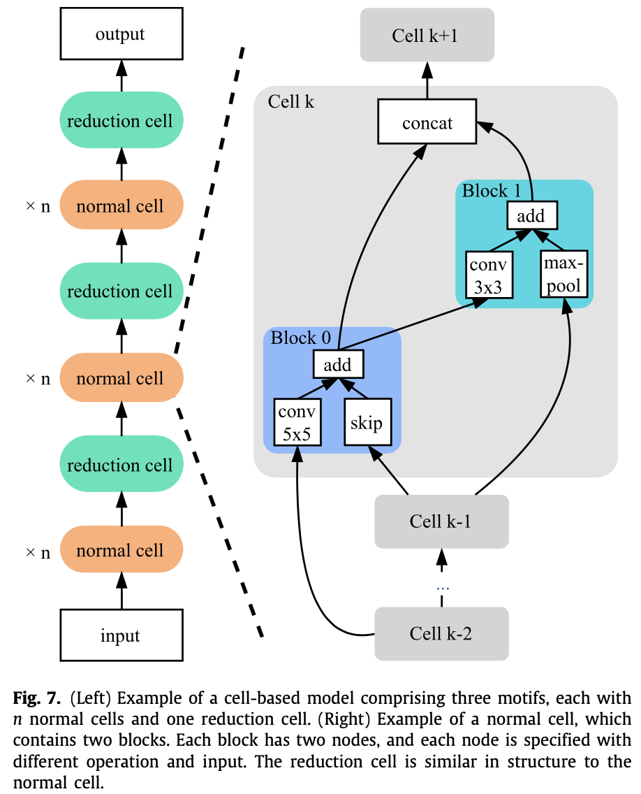

论文地址：
AutoML: A survey of the state-of-the-art
最近看了些NAS的论文，发现上面这篇综述写的很不错，非常全面，详细拜读了一下。有很多细节不是很懂，也没空去精读原论文，但是能够对大致的脉络有个初步的了解。因此简单写一下这篇综述讲了些啥，第一次接触NAS，可能有理解有误，望指正批评。
介绍
首先这篇综述是讲AutoML的，不单单是NAS，但是因为NAS是AutoML中最最重要的一部分，所以主要篇章还是用来讲NAS了。据作者所说，应该是第一篇完整讲述AutoML整个流程的综述。
首先，本文将AutoML划分成了如下几个流程：
先是数据准备，然后是特征工程，接着是模型生成，最后就是模型评估了。其中模型生成又可以分为搜索空间和优化方法，搜索空间有传统的ML模型或者DL模型，优化方法又分为超参数优化和结构优化。NAS的话主要就涉及到DL模型的搜索空间定义、结构优化和模型评估策略这三块。
因为我主要关注NAS这块，所以其他部分就只简单介绍一下，不做过多解读。
数据准备
看上面这个图应该很清楚了，数据准备主要分为数据收集、数据清洗和数据增强三个部分。
数据收集
有开源的就去下开源的，没开源的就去互联网上爬，要是什么都没有呢，那就通过GAN之类的技术来生成伪数据，有总比没有好嘛。
数据清洗
就是清洗数据中的噪声、脏数据，这一过程可能需要一些知识去判断什么是噪声。还有一个研究主题就是如何清洗每天更新的源源不断的新数据。
数据增强
数据增强某种程度上也可以被视为数据收集的一种工具，因为效果都是一样的，增加了新数据。但是它的目的有所不同，主要是为了防止模型过拟合。上图针对不同数据有很多增强方法，这里就不介绍了。
特征工程
有句话叫：数据和特征决定了机器学习的上界，而模型和算法只是为了去近似这个上界。主要可以分成三块，特征选择、特征构建和特征提取。这里也不多介绍了，因为在DL里特征工程用得很少，DL模型可以自己从数据中学出特征，很少需要自己手动构造特征了。
模型生成
从这块开始进入到了NAS的领域。之前说了，搜索空间分为ML和DL两块，本文只关注DL，而优化方法又分为超参优化和网络架构优化，本文也主要只关注网络架构优化，因为超参优化是挑选出最优网络架构之后的事情了，不过也有工作将NAS用在超参优化上的，这个就不在讨论范围内了。
上面两张图是NAS的一般流程：
- 首先针对不同的任务定义一个搜索空间，这个搜索空间就决定了你搜出来的网络架构可能长什么样子，也决定了你搜出来的架构可能性有多少，当然是越大越好，但是带来的后果就是搜索速度太慢。
- 然后在这个搜索空间里进行搜索，采样出一个比较好的模型架构，这里方法就非常多了，最简单的就是随机搜索，随机采样一个网络架构。
- 最后就是在训练集上评估你采样出的架构效果，反馈给架构优化，让它优化，然后继续采样，循环下去。评估方法也有很多，最简单的就是像正常训练模型那样完整训练一遍，得到效果，但是这样太慢了，因此需要其他方法来加速训练或者估计效果。
搜索空间
神经网络可以看作是一个DAG，而如何定义这个DAG，其实你可以用生成图的方式做加法生成它，也可以做减法，从大图中抽取出子图等等，有很多方法。
定义搜索空间需要人类知识，这一步目前还不够Auto，定义的好，生成出来的架构才可能好。而有些工作发现只要你搜索空间定义的足够好，随机搜索都能达到和各种架构优化方法相似的效果，那么NAS将变得毫无意义，所以这一块还是挺玄学的。
整体结构搜索
就是按照DAG的拓扑序，依次生成出模型架构出来。一般来说，用一个RNN来生成，每生成一个node，都要预测出它的输入是哪些node（残差）、作用在它上面的op有哪些。
但是这种方法太慢了，搜索的复杂度是指数级别的，因此在最初的几篇RL论文里，都用了几百个GPU训练了几十天才搜出来，穷苦人家可搜不起。
cell搜索
这种方式也是借鉴了人类设计神经网络的经验，像ResNet系列都是将一个个cell层层堆叠得到的，因此如果只搜一个cell，然后将相同的cell堆叠起来岂不是大大减小了搜索空间。后面的很多工作都是基于cell来搜索的，比如NASNet。

在NASNet中，cell被分成了两种，一种是normal cell，它的输入输出维度保持相同，另一种是reduction cell，它的结构和normal cell相似，但是输出的宽度和高度减半，通道数加倍。
最后搜索出最优cell之后，根据需要堆叠不同层数的cell就行了，这个层数也是人为定义的。但是这里就会存在一个训练和评估不一致的问题，一般来说，在搜索的时候，为了减小显存占用，会堆叠比较少的层数去评估。但是在得到最优cell之后，用来retrain时会堆叠比较多的层数，这里就不一定是最优解了。也有工作做这方面的优化，比如P-DARTS，在搜索阶段逐渐增加堆叠的层数。
分层搜索
当然搜索cell也是存在问题的，忽视了整体结构的优化，而且每一层的cell相同也不一定最好啊。因此后来的工作又提出了分层搜索的方法。
比如Auto-deeplab在搜索cell的同时，还搜索了不同层的分辨率，下一层的分辨率可以是一半、不变或两倍，这一步限制一是为了减小搜索空间，二是为了增加稳定性，防止分辨率变化太大。
再如HierNAS，按照层次结构来搜索网络架构，第一层是一些原子操作，第二层用这些原子操作生成一些比较小的网络，第三层用第二层的小网络再搭建出一个更大的网络，依次下去。
再如progressive NAS，为了减小一个cell里面的搜索空间大小，从一个cell里面只有一个block开始搜索，每次挑出top-k个cell，在基础上衍生出两个block，依次下去。评估性能用的是代理模型直接预测，不需要真的训练一遍。
再如MnasNet，它将整个网络分为了若干个cell，每个cell串行了若干个block，每个cell的block数量可能不同，而单个cell里面的block结构是相同的，这样就考虑到了整体的网络搜索空间。和堆叠cell不同的是，每个block的结构比较简单，不然的话整体上搜索复杂度还是太大了。当然这篇主要还是为了做移动端部署，因此做了多目标NAS，将延时也考虑到了目标函数中去。
之前的方法还存在一个问题，就是基本都是在小数据集上做的搜索评估，最后将最优结构运用到大数据集上，这就存在不一致性。因此例如ProxylessNAS就直接在大数据集上搜索评估，为了减小显存消耗，采用BinaryConnect，每次只激活两个结点之间的一条边。
网络态射
这类方法主要思想就是在已经训练好的成熟网络基础上增加宽度、深度等等，继承父网络的参数，加速子网络的训练。
首先是Net2Net，扩展分为两个方向，一种是宽度上的，一种是深度上的，不能同时进行。
因此后来就有了网络态射，可以处理任意线性层和非线性层，并且深度和宽度上可以同时扩展。
架构优化
定义好搜索空间后，就要采用架构优化算法来搜索出最优的架构了。
演化算法
演化算法就是模仿的生物进化过程。首先要对网络架构进行编码，方便之后的操作。可以将图结构编码为二进制串，但是这样固定长度不灵活。于是就有了Cartesian genetic programming、Neuro evolution of augmenting topologies、Cellular encoding等各种编码方法，详细就不介绍了。
一般演化算法分为四步：选择、交叉、变异、替换。
- 选择。就是从候选的网络架构中挑选出适应度最高的，一种可以直接挑绝对值最高的，另一种可以挑相对值最高的，第三种比较有名的是锦标赛选择算法，也就是放回抽样，每次等概率随机选k个，挑出最好的那一个，进入下一代，其余放回，重复上述操作。
- 交叉。交叉方式和编码方式有很大关系，
- 变异。上面两步做完后，有很多方式可以对个体进行变异，比如随机翻转某一位，随机增加或者删除两层之间的连接等等。
- 替换。新的个体加入种群后，旧的个体要被删除掉。可以删除最久之前的，也可以删除效果最差的，也有工作一个都不删除，只要你内存和时间顶得住。
强化学习
强化学习主要思想就是用一个控制器（一般是RNN）来生成网络架构，然后评估得到得分作为反馈更新控制器参数。有用策略梯度的，也有用Q-learning的，还有用PPO算法的等等。第一篇NAS论文就是用的RL，但是这一类方法普遍很费卡，一般人玩不起。
梯度下降
前两种都是在离散空间搜结构，梯度下降方法是将离散空间变为了连续空间。第一个提出的是DARTS，在两个结点之间定义了若干种操作，然后做softmax，最后在评估的时候取argmax。
这种方法也有不好，比如成倍增加了显存，本来一条边现在需要成倍的计算量，此外用了代理任务，在小数据集上训的层数比较少，迁移到大数据集上层数又很多。也有解决方法，比如P-DARTS，随着训练进行逐渐加层数，为了减小计算量，还逐渐减少了每条边上的操作数。而GDAS每次只选概率最大的那个操作边做前向，反向传播用gumbel softmax。
两套参数联合优化也是很困难的，DARTS用的是交替优化，一次优化结构参数，一次优化模型权重。
最后还有个问题，就是搜索后期会倾向于搜索残差连接之类的操作，这不好。于是DARTS+发现一个cell里出现两个或以上残差连接后就直接停止。P-DARTS则是给残差加了正则化，减小出现的次数。
代理模型
这一类方法（SMBO）使用一个代理模型来指导最优模型的生成。传统的方法有贝叶斯优化（高斯过程、随机森林、TPE等等），就不详细介绍传统方法了。
也有用神经网络当作代理模型的，比如PNAS、EPNAS、NAO都用一个LSTM或者MLP将离散的结构编码成连续的表示，然后预测性能，接着找出性能最高的最优表示，用解码器还原出离散的结构。
网格和随机搜索
这就是最原始最普通的优化方法，比如直接在搜索空间随机搜索结构，然后评估，最后取最优的就行了。虽说随机搜索听起来不大行，但实际出来的效果，能和大多数NAS方法达到相似效果，还很简单。
混合优化方法
上面这么多方法混合在一起，可能效果会更好。演化算法是全局优化的，鲁棒性很强，但是随机性有点大，不稳定，计算消耗也大。强化学习也是的，训练很不稳定。梯度下降方法训练快，但是需要提前定义好超网络结构，限制了结构的多样性。
演化算法可以结合强化学习、梯度下降、SMBO，梯度下降也可以结合SMBO等等，这里就不详细介绍了，典型的例子有Evo-NAS、NAO等等。
超参优化
这一步其实是脱离了NAS的，就和一般的超参优化一样，网络搜索、随机搜索、贝叶斯优化、梯度优化等等方法，这里不做过多介绍了。
模型评估
在模型生成之后，需要对模型进行评估，然后指导架构优化模块生成更好的架构。最一般的方法就是从头开始训练到收敛，但是这样太慢了，一般都要生成个几百万以上的架构的，训练时间太久了。
低保真度
可以在评估时降低数据集的分辨率，降低cell堆叠的层数，使用小数据集等等，这样可以快速得到架构的大致效果，但是最后得到的架构可能在目标数据集上不是全局最优的。
权重共享
比如ENAS，可以在多次评估模型性能时，继承之前相同node的参数，可以加快收敛速度。网络态射也是用到了权重共享。
代理模型
直接学习一个预测器，输入是网络架构，输出是它的性能，当然这需要提前先训练一些模型，得到（架构，性能）的若干数据，然后才能学习出这个预测器，PNAS就是这么干的。当然预测器的学习数据肯定不会多，所以SemiNAS就用半监督的方法，利用大量无标注的结构去预测出性能，加入到训练集中继续优化预测器。
early stop
可以只训练几轮，然后根据前期的学习曲线预测出最终的性能。
一些讨论
效果对比
可以看出，演化算法和强化学习搜索时间都非常长，除了个别几个用了权重共享之类技巧的。梯度下降方法全部都挺快的，但是整体效果都不如其他几类方法。
其他
从整体流程上来看，NAS方法还可以分为一阶段和两阶段。两阶段是一般做法，第一个阶段就是搜索评估阶段，选出最好的架构，第二个阶段就是retrain这个最优架构，在验证集上评估。而一阶段就是只需要训练一次超网络，联合优化架构参数和模型权重，之后不需要再retrain了。比如比较有名的Once-for-all，采用了progressive shrinking算法来使得子网络之间的性能相互不受到影响。
NAS还可以分为one-shot和non-one-shot，one-shot意思就是搜索空间重合的，可以重复利用之前的参数，比如ENAS、网络态射、ProxylessNAS等都是的。
大多数NAS都只是把最终的效果当作目标，其实在移动端部署上还要考虑延时、模型大小、计算量等目标，一般都是解帕累托最优，比如MnasNet考虑到了延时。
开放性问题
搜索空间的灵活性
现在的搜索空间基本都还是人为定义的，参考了很多人类设计神经网络的经验，比如原子操作定义成conv、pooling之类的，结构上cell堆叠等等，但是真正的auto应该是模型自动设计网络架构和原子操作，比如AutoML-Zero就用最基本的原子操作（sin、cos、mean、std等）设计出了两层的神经网络。这一块应该是今后的一大方向，例如目前工作主要在CV上，而对于NLP的Transformer模型，搜索空间如何定义的很好？目前工作还寥寥无几，看了几篇也都是堆叠conv，分支结构之类的。
探索更多的领域
如上所说，目前大多数工作都是在CV上，搜的是conv结构，而像NLP、语音等领域探索甚少，像多目标领域也只有很少的工作（韩松老师组工作很多），即使是在CV，任务也大多数局限在CIFAR-10和ImageNet上。
可解释性
搜出来的网络为什么好？现在人类设计的网络大多数都能强行解释一下好处，即使它仍然是个黑盒。但是NAS搜出来的基本看不出设计的逻辑。
可复现
之前也说了，例如演化算法和强化学习这一类方法训练很不稳定，很难复现出结果。很多论文也都只是公开了最好的模型，都不放出源码的（当然我并没有质疑他们），超参数之类的也有些没有公布，这导致我们平民玩家没法复现，没法用啊。而且大家评测的环境都不相同，众说纷纭，没法公平比较，因此也有一些工作提出了NAS统一的数据集来评测。
鲁棒性
如果目标领域数据添加了噪声，可能会对搜出来的模型产生很大影响。所以如何搜出更加鲁棒、能适应不同领域或者有噪声数据的结构可能是未来的一个研究方向。
联合超参优化和架构优化
目前大多数NAS方法都是先搜出最优架构，再调整超参在目标领域上retrain，如何同时学好这两块也是一个方向。
完全的AutoML的pipeline
做到从数据收集开始一直到最后的模型生成训练全部流程化，不需要人为参与，那样才是真正的智能。目前的话有一些比较好的开源工具了，AutoKeras、NNI等等。
终身学习
当新的数据源源不断进来时，当只有少量有标签数据或者有大量无标签数据时，如何做NAS，有几个不错的工作，比如UnNAS是做无监督NAS的，MetaNAS是结合meta-learning的。
经典论文简析
（NAS）[ICLR 17] Neural Architecture Search with Reinforcement Learning
动机
用强化学习来采样网络，生成出最优网络结构，避免人工设计。
方法
用RNN来预测CNN或者RNN的结构，采样结构，下游任务效果作为强化学习得分，策略梯度更新参数。
CNN预定义好层数，LSTM每5层预测CNN一层的5个参数。
RNN预定义好cell的计算拓扑图，LSTM预测每个node的计算逻辑。
实验
接近人类设计网络的最好水平。速度超慢，800 K40，28天，只适用于小数据集例如CIFAR-10。
评价
强化学习应用到NAS的第一篇论文。
（NASNet）[CVPR 18] Learning Transferable Architectures for Scalable Image Recognition
动机
RL直接搜太慢了，只能用在小数据集，ImageNet之类的大数据集没法用。
方法
提出了NASNet，用堆叠相同cell的方式减小搜索空间。在CIFAR-10上面学习cell结构，通过增加堆叠层数的方式迁移到ImageNet上去。用PPO替代策略梯度。
选择之前的两个node，分别预测对应op，然后预测合并op。
实验
效果和参数量都好于前作，达到了SOTA水平。速度加快很多，500 P100，4天，相比于前作加速7倍。
评价
NASNet，通过cell堆叠加快了结构搜索的速度，同时效果达到了SOTA，并且容易迁移到其他任务上去。
（ENAS）[ICML 18] Efficient Neural Architecture Search via Parameter Sharing
动机
之前的方法采样出一个结构，在dev上得到acc，然后就会抛弃权重，重新采样训练，非常耗时。
方法
定义一个超图，每次搜出的子图共享权重。
对于RNN cell，LSTM的每两个step预测之前某个node作为输入，再预测op，最后出度0的node拼接作为输出。

对于CNN，一种策略是直接生成整个网络，每个node先预测之前哪些作为输入，然后预测op。
另一种策略和NASNet类似，堆叠cell，搜索空间缩小到一个cell。
实验
优于NAS和NASNet，1 1080Ti，16小时，相比NAS加速1000倍。
评价
训练速度很快，AutoKeras背后就采用了ENAS。
（DARTS）[ICLR 19] DARTS: Differentiable Architecture Search
动机
离散结构搜索太慢了，采样+验证+反馈的循环很耗时。
方法
连续域结构搜索代替离散域结构搜索，用微分来优化结构。
两套参数：模型参数$w$（训练集优化）、结构参数$\alpha$（验证集优化）。
交替优化两套参数，softmax+relax学习最终结构。
实验
效果达到或接近了SOTA，速度上比ENAS慢，比其他的方法快。
评价
第一个用可微分方法做NAS的，第一个连续空间搜索代替离散空间搜索。
[ICLR 19] Rethinking the Value of Network Pruning
动机
现有的剪枝方法存在问题，很多操作不合理，没有必要。
方法
传统剪枝方法基于两个假设：
- 过参数化很重要，训练大模型再剪枝优于直接训练剪枝后的模型。
- 继承大模型参数，再finetune很重要，优于随机初始化剪枝后模型再重新训练。
本文认为都不一定对：
- 对于预定义好的模型，直接训练可以达到和训练-剪枝-finetune相同甚至更好的效果。
- 大模型剪枝后，随机初始化重新训练，效果和继承参数finetune差不多。
所以本文认为剪枝后的结构重要，而参数不是那么重要。
实验
一系列实验结果验证了猜想，此外本文还否定了彩票假设，认为剪枝后随机初始化即可，没必要和原始初始化相同。
评价
仍然有一些局限性，比如数据分布均衡、模型比较大，估计在其他设置下不一定work。而且不如finetune速度快。
参考链接
不错的综述或讨论
https://lilianweng.github.io/lil-log/2020/08/06/neural-architecture-search.html
https://jinzhuojun.blog.csdn.net/article/details/84698471
http://www.tensorinfinity.com/paper_136.html
https://zhuanlan.zhihu.com/p/73785074
https://www.zhihu.com/question/359162202
https://github.com/pzhren/Awesome-NAS
Neural Architecture Search: A Survey
A Comprehensive Survey of Neural Architecture Search: Challenges and Solutions
AutoML: A Survey of the State-of-the-Art
A Comprehensive Survey of Neural Architecture Search: Challenges and Solutions
一些经典论文
Neural Architecture Search with Reinforcement Learning
Designing Neural Network Architectures using Reinforcement Learning
Efficient Neural Architecture Search via Parameter Sharing
Learning Transferable Architectures for Scalable Image Recognition
DARTS: Differentiable Architecture Search
Neural Architecture Optimization
FP-NAS: Fast Probabilistic Neural Architecture Search
SNAS: Stochastic Neural Architecture Search
EfficientNet: Rethinking Model Scaling for Convolutional Neural Networks
Once for All: Train One Network and Specialize it for Efficient Deployment
Rethinking the Value of Network Pruning
TextNAS: A Neural Architecture Search Space Tailored for Text Representation
The Evolved Transformer
HAT: Hardware-Aware Transformers for Efficient Natural Language Processing
Searching Better Architectures for Neural Machine Translation
一些经典源码或工具
https://github.com/quark0/darts
https://github.com/melodyguan/enas
https://github.com/mit-han-lab/once-for-all
https://github.com/mit-han-lab/hardware-aware-transformers
https://github.com/microsoft/nni
https://github.com/IntelLabs/distiller
https://autokeras.com/